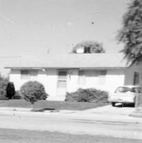
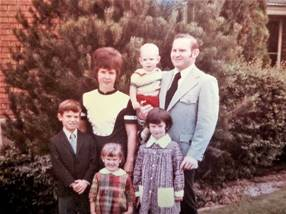
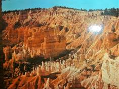

Chapter 10 – FIRST HOME IN OGDEN 324 13TH STREET – Aug. 1961 to June 1969
We were excited to move into our home in Ogden. The home had two bedrooms & a bath, a long kitchen and long living room and a full unfinished basement. We had fun landscaping it and putting in our garden. We didn’t have sprinkling systems at that time and so we had to drag hoses, with a sprinkler on, throughout the day. Boy, did I appreciate sprinkling systems when they finally came out. Our neighbors were wonderful. They were a lot older than us - most old enough to be our parents or grandparents, but they were wonderful to us. There were two neighbors about my age and we became good friends, but I loved all my neighbors. Pat & Ray Wiggins lived across the street. Pat was a dance teacher. They only had one child, Susan. They were only semi active in the church. We became good friends with them. Pat and Susan taught dance lessons and when Sandi was only three years old, Pat felt Sandi would do good in dancing as her legs were strong, so we let her start taking lessons. Sandi did do very well. She took lessons until we moved – when Sandi was seven.
The Ericksons who lived next door on the west of us had a beautiful yard and had 3 beautiful Horse Chestnut trees. They have such beautiful blossoms that last for a long time in the spring - so Ken & I have always wanted one. We finally bought one in 1996 at our home in Layton - 778 E 700 S.
Brother Erickson's nephew lived with them. He was a bachelor and was almost the same age as Bro. & Sis. Erickson. His name was Leonard and he & Ken used to enjoy visiting over the fence and comparing the vegetables they raised in their gardens. One year, before harvest time, Ken came home from work and found Leonard pulling up all his tomato plants. Ken asked him what he was doing and he said: “You win, you win.” All his tomato plants were producing tiny yellow bell tomatoes and he didn’t want them. He had been sold these plants instead of the plants he expected.
The people on the east were nice people also. They were not members of the church, but good people. He was a sheep herder and he demanded that his wife fix meat, potatoes & gravy for supper every night. His brother also lived with them. I thought that was a coincidence. This brother only had one arm. (Can't remember their names).
Ken wanted me to stay home and raise our children after we started having a family and I also wanted to do this. We had borrowed some money from Uncle Dale for our down payment on our home, so Ken got a part-time job with a grocery store nearby, named "Stop and Shop". He worked full-time as a computer operator at 2nd street in Ogden (Army Depot) and enjoyed it, but they were making some changes and Ken thought they were going to put him in the IRS dept and he didn't want that - so he transferred to Hill Air Force Base. He didn't work long there because there wasn't enough work to keep him busy and he hated that. They needed a computer operator at Commercial Security Bank on Washington Blvd. in Ogden - so he applied and got the job. He worked there 7 ½ years - first as a operator, then as a programmer, then supervisor.
Ken had to work on crazy shifts. The one I remember was from 4 a.m. to 12 noon, but he worked all different shifts.
We lived in the Mt Fort Ward. For the first few weeks we came home feeling bad because no one welcomed us there or was friendly to us. Ken said, as we left church one Sunday "if we come next week and no one speaks to us, we'll go to another ward. Well, the next week we had practically everyone speak to us - at least it seemed that way and from that time on we loved the ward. It was a ward that had all ages and we became friends with all of them. Pete & Grace Mooney were quite a bit older than us, but we became good friends. Grace was a sweet lady and Pete was a "hoot". He always kept us laughing. We enjoyed being with them. Ken can retell lots of stories Pete told us. They were about 10 or 15 years older than us, but that didn't matter. I taught one of their daughters in MIA.
The Hansen's were old enough to be our grandparents, but they took us under their wing and were wonderful to us. They invited us to their home for dinner, they took us to the temple with them - to do sealings and endowments. That was the first time we had done sealings. Sister Hansen made our temple clothes for us (robes, sash, veil & cap) and she wouldn't let us pay her. We used them from that time until 1997 when we replaced them on our 36th wedding anniversary. - So we used them for about 33 years. Sis. Hansen was a tall lady and so my robe never fit really well and it would slide off my shoulder so I had to always pin it, but I never said anything to her as I really appreciated her making them for us as a gift. They were special people.
Another special sister was Sister Butler. She was a widow and had an apartment in her basement where usually the missionaries lived. We enjoyed her and also another elderly widow, Sister Thompson. Sister Thompson was a little Dutch lady - a widow and about 75 years old when we first met her. She lived in a basement apartment up by the church. She had long white hair and wore it in a bun or braid at the back on her head. She was really sweet and she became our second grandmother. She was the mother to Carol Petersen. Alfred was Carol's husband and they lived in the ward too. Sister Thompson was such a sweet little sister that we really enjoyed going to visit her or sitting by her at church, etc.

Blaine & Launa Barrows became our good friends also. They were about our age. She & I were pregnant about the same time. When Ken took me to the hospital to have Sandi, they put me in a prep room and in the room next to me I heard a lady screaming. I got really scared and thought "Oh no, is it going to be that bad?" In fact, my labor stopped. The doctor, on call, gave me a sleeping pill, told me to go home and go to sleep and if it was false labor, I might be a few more days, but if it was the real thing, he would probably see me back later that night. It was the real thing, and I woke up a couple of hours later in hard labor. I didn't wake Ken as I didn't want him to take me back to the hospital and have the same thing happen again. So I waited it out, until I finally had a showing. I got scared and woke Ken. I wasn't long at the hospital until Sandi was born. In fact, I was lucky I had the showing or I might have had her at home. That was dumb on my part. Well, I found out later that the lady screaming in the room next to mine was Launa. She was having a miscarriage. Blaine's hair was red and since Sandi's hair was red (strawberry blond) it was hard for her and Blaine to see Ken & I with Sandi since they had lost their little girl. We have seen Blaine & Launa a few times since we moved and Launa always asks about Sandi. They did have other children though.
Ken wanted to go homestead in Canada. He tried to talk me into going. I knew it would probably be beautiful in Canada so I was thinking about it until one night when Sandy woke up with the croup and she could hardly breathe and the next morning we took her to the doctor and was able to get medicine to help her. I knew then that I didn’t want to live out in the wilderness where I didn’t have close access to doctors and hospitals.
Denver, Colorado and Rocky Mountain Nat’l Park in 1962 – Ken and I took Sandi and drove to Denver, Colorado as we had heard that there were lots of jobs there for computer operators and Ken was working at Hill Air Force Base and didn’t like it as you had to look busy when you were not. Ken has always been a hard worker and wants to give a full day’s work for a full day’s pay. It turned out that there were not needed computer operator jobs there. We had been misinformed. Ken and I couldn’t afford to stay in motels and hotels all the time so we had taken our tent and camping equipment and we camped in the beautiful Rocky Mountains National Park. Sandi was not quite a year old, but she was very good traveling and camping. We went to the Ranger talks at night and camped for a couple of days there. Something happened to our car, which was an Oldsmobile. We had gotten decent gas millage before, but since going over the mountain, we got terrible gas millage and could hardly make it from one gas station to another. We had to go into a bank in Denver and draw money from our savings to make it home. We had to get another car and Ken was able to get us a beautiful little red car. I loved it and my neighbor friends and I would wash our cars at each other’s home while we visited. I wanted it to stay clean and pretty.
When Sandi was about two years old, we bought a small dog, a chiwawa. It was a highstrung little dog - so we didn't have it too long. It was a house dog and Ken didn't like pets in the house anyway. One morning after getting Sandy dressed and fed, I hadn't slept very well that night so laid down on the coach and fell asleep. I shouldn't have done that as when I woke up I found that Sandi had gotten into my lipstick and got it all over the dog, herself and other things as well. Thankfully, there wasn't too much on the walls - anyway, it could have been worse, but wasn't very pleasant to wake up to.
Another time, I remember coming into the kitchen and hearing Sandy counting slowly and distinctly from 1 to 5 and she was pointing at the dog with a frown on her face. I used to count to five slowly to her when she didn't want to pick up her toys and put them away. I had to laugh to myself upon seeing that. I guess the dog didn't do what she wanted it to do, so she was counting at him for him to obey. I have always used that method of discipline (along with many others) to get the children to obey. I don't remember ever having them not obey or complete the task when I would count at them. Sometimes it took for me to reach the count of 4 before they started to move, but they did move because they knew I meant business. Sometimes they would look at each other and laugh when they were older, but they still would obey. I remember wondering what I would do if they didn't obey, after they were older and even taller than I was. I'm thankful that they were respectful of me and would obey. Maybe they knew they better because if I told their dad, they would be in big trouble. If Ken took off his belt, they knew they were in trouble. He did use it a couple of times, but usually all he had to do was take it off and act like he would use it and it got their attention in a hurry.
GIVING BLOOD – BIG MISTAKE: While living in Ogden, we had a family down the street from us, the Beus family, who had a son with leukemia. He needed blood transfusions and so our bishop had asked the ward members to donate blood for this boy. I had never given blood before, but wanted to do this to help him. I had another neighbor who also wanted to give blood, so I picked her up and we drove up to the Dee Hospital, where we were told to go. After testing me, they said I was on the verge of not being able to give blood, but they would still take it if I wanted to go ahead with it. I told them I did. After they were through, they had me rest a little and then had me sit up and gave me some orange juice. After drinking it, they asked me how I felt and I said I felt fine. They were going to let me go, but just then I fainted and I started into convulsions and they quickly grabbed a wood stick to stop me from swallowing my tongue. After I woke up, they had me rest for several more minutes. Then they asked if I had someone who could drive me home. My neighbor, who had come with me, wasn’t able to give blood as she was anemic and she didn’t drive. She had never learned to drive, so I told them “no”, but I was sure I would be fine now. We walked out to the car and I started driving us home, but I only made it a few blocks when I felt like I was going to pass out again, so I quickly swerved off to the side of the road, stopped the car and threw it in park and I did pass out. This happened several times and my neighbor were very frightened, so was I, but I finally got us home. She got out and I drove into my driveway and passed out again. I could hardly walk and almost fainted getting to the door. I finally got the door open, crawled in and pulled myself up on the couch and stayed there until Ken got home from work. I had lots of problems for quite a while and finally Ken took me to the doctor. He tested my blood and told me that I barely had enough for myself and not to ever give blood again. I haven’t. He told me it would take months before I had my full strength back again and to take it easy. I did. The Beaus boy did pass away. Everyone was sad.
 We have had some wonderful vacations since our marriage. The next year after we were married we went down to the parks - Bryce, Zions and Grand Canyon. It was very beautiful and we had a glorious ten days being together and enjoying the out of doors. We visited my relatives on the way and tried to attend a session at the St. George Temple, but we missed the morning session and they didn't have an afternoon session. The next summer I was pregnant with Sandy so we didn't take a large vacation, but we did take trips to Idaho to visit his relatives. The summer of 62 we didn't take a vacation as we thought Sandy was too little, but the following summer, 1963 we went to Denver by route of the Cascade Mountains. I had been tending Deon Mayberry's children, Jan, Scottie and Kevin, during the summer months and she got Luane Moulton to tend them while I was gone. We decided to go to Denver mainly to try to find a different job for Ken as he was discouraged with his job at the bank and we were both discouraged with our ward. The mountains and camp grounds were beautiful and we had a wonderful time there, but when we got into Denver, it was so terribly hot, it was so big, and we were running out of money due to our terrible gas millage, and there weren't any jobs to be had in I.B.M. so we were quite discouraged and disappointed. Our car was running fine when we left, and we don't know what happened, but it got so bad we practically had to stop at every gas station. We had to stop at a bank and draw more money out of our account in Utah. When we got home, we had to trade it in on another car.
The summer of 64 we decided to take short vacations to Salt Lake and Provo just the two of us. Mom took Sandy for us. We enjoyed these more than the one to Denver the year before. We went to shows, went swimming and ice skating, ate out, stayed in motels and just enjoyed ourselves.
This year, 1965, we took our vacation up at Ireland Park, just a few miles from Yellowstone Park. We camped at Buttermilk Camp Grounds, fished with our boat in the lake, and enjoyed ourselves. At the first of the week, we went to Lava Hot Springs. Bob, Carol and their kids met us there and we went swimming and sightseeing. We stayed there that night and the next day and Sunday night we stayed at Rich and Lois's. We stayed in Pocatello Monday and Tuesday, then on Wednesday we went to the Idaho Falls Temple to do baptisms for the dead with Rich and Lois. Afterwards we went on to Ireland Park.
South Fork above Huntsville –When we were living in Ogden and Clearfield, we used to take the children camping or for a picnic up South Fork Canyon to the campgrounds there. It was a pretty area and fairly close when we lived in Ogden. One or more times, we continued on that road up to Monte Cristo and camped there. I didn’t like it as well as there were large horse flies there and they bit hard